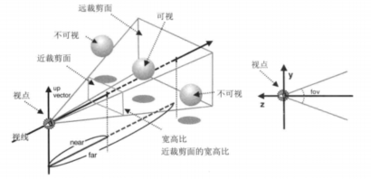
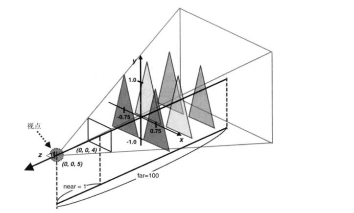
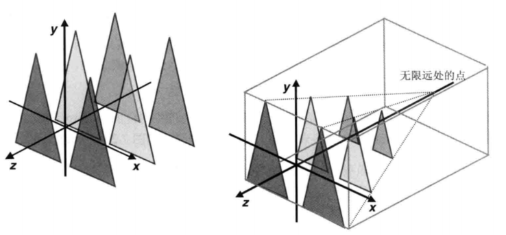
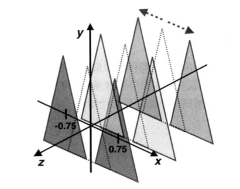

对应《WebGL编程指南》第七章 28-perspectiveview，29-perspectiveview_mvp，30-perspectiveview_mvpMatrix
要点：可视空间（透视投影）、模型视图投影矩阵
知识点
一、可视空间（投影透视）
在正射投影的可视空间中，不管三角形与视点的距离是远是近，它由多大，那么画出来就有多大。为了打破这条限制，我们可以使用透视投影可视空间，它将使场景具有上图那样的深度感。
示例程序PerspectiveView 就使用了一个透视投影可视空间，视点在（0, 0, 5），视线沿着Z轴负方向。
从上图所示，沿着Z轴负半轴，在轴的左右两侧各一次排列着个相同大小的三角形。在使用透视投影矩阵后，WebGL 就能够自动将距离远的物体缩小显示，从而产生深度感。
1.1 定义透视投影可视空间——透视投影矩阵
投影透视可视空间如下图所示。就像盒状可视空间那样，透视投影可视空间也有视点、视线、近裁剪面和远裁剪面，这样可视空间内的物体才会被显示，可视空间外的物体则不会显示。那些跨越可视空间边界的物体则只会显示其在可是空间内的部分。

不论是透视投影可视空间还是盒状可视空间，我们都用投影矩阵来表示它，但是定义矩阵的参数不同。Matrix4 对象的setPerspective()方法可用来定义透视投影可视空间。
| 参数 | Matrix4.setPerspective() |
|---|---|
| fov | 指定垂直视角，即可视空间顶面和底面间的夹角，必须大于0 |
| aspect | 指定近裁剪面的宽高比（宽度/高度） |
| near，far | 指定近裁剪面和远裁剪面的位置，即可视空间的近边界和远边界，必须大于0 |
定义了透视投影可视空间的矩阵别成为透视投影矩阵。
注意，第2个参数 aspect 是近裁剪面的宽高比，而不是水平视角。比如说，如果近裁剪面的高度是100而宽度是200，那么宽高比就是2。
在本例中，各个三角形与可视空间的相对位置如下图所示。我们指定了 near = 1.0，far = 100，aspect = 1.0，以及 fov = 30.0。

1.2 代码分析
本案例核心代码
1 | // 投影矩阵 |
代码中的顶点着色器和片元着色器，与 LookAtTrianglesWithKeys_ViewVolume.js 中的变量的命名都完全一致。
main()函数的执行流程也差不多：首先调用 initVertexBuffers()函数，向缓冲区对象中写入这6个三角形的顶点坐标和颜色数据。
接着我们获取了着色器中视图矩阵和透视投影矩阵 uniform 变量的存储地址，并创建了两个对应的矩阵对象。
然后，我们计算了视图矩阵，视点设置在（0, 0, 5），视线为Z轴负方向，上方向为Y轴正方向，最后我们按照金字塔状的可视空间建立了透视投影矩阵。
1 | projMatrix.setPerspective(30, canvas.width/canvas.height, 1, 100); |
其中，第2个参数 aspect 宽高比（近裁剪面的宽度与高度的比值）应当与 canvas 保持一致，我们根据 canvas 的 width 和 height 属性来计算出该参数，这样如果 canvas 的大小发生变化，也不会导致显示出来的图形变形。
接下来，将准备好的视图矩阵和透视投影矩阵传给着色器中对应的 uniform变量。最后将三角形绘制出来。
到目前为止，还有一个很重要的问题没有完全解释，那就是矩阵为什么可以用来定义可视空间。
1.3 投影矩阵的作用——规范立方体
首先来看透视投影矩阵。可以看到，运用透视投影矩阵后，场景中的三角形有了两个变化。
首先，距离较远的三角形看上去变小了；其次，三角形被不同程度地平移以贴近中心线，使得它们看上去在视线的左右排成了两列。实际上，如下图左所示，这些三角形的大小是完全相同的，透视投影矩阵对三角形进行了两次变换：
- 根据三角形与视点的距离，按比例对三角形进行了缩小变换；
- 对三角形进行平移变换，使其贴近视线，如下图右所示。经过了这两次变换之后，就产生了深度效果。

这表明，可视空间的规范可以用一系列基本变换（如缩放、平移）来定义。Matrix4 对象的 setPerspective()方法自动地根据上述可视空间的参数计算出对应的变换矩阵。
换一个角度来看，透视投影矩阵实际上将金字塔状的可视空间变换为了盒状的可视空间，这个盒装的可视空间又称规范立方体，如上图右所示。
注意，正射投影矩阵不能产生深度感。正射投影矩阵的工作仅仅是将顶点从盒状的可视空间映射到规范立方体中。顶点着色器输出的顶点都必须在规范立方体中，这样才会显示在屏幕上。
有了投影矩阵、模型矩阵和视图矩阵，我们就能够处理顶点需要经过的所有集合变换，最终达到具有深度感的视觉效果。在下面几小节中，我们就把这三个矩阵结合起来，建立一个简单的示例程序。
二、模型矩阵、视图矩阵和投影矩阵综合案例
2.1 综合表达式
PerspectiveView.js 的一个问题是，我们用了一大段枯燥的代码来定义所有顶点和数据。示例中只有6个三角形，我们还可以手动管理这些数据，但是如果三角形的数量进一步增加的话，那可真就是一团糟了。幸运的是，对于这个问题，确实还有跟高效的方法。
仔细观察下图，你会发现左右两组三角形的大小、位置、颜色都是对应的。如果在虚线标识处也有这样3个三角形，那么将它们向X轴正方向平移0.75单位就可以得到右侧的三角形，向X轴负方向平移0.75单位就可以得到左侧三角形。

利用这一点，我们只需按照下面的步骤，就能获得 PerspectiveView 的效果了：
- 在虚线处，即沿着Z轴准备3个三角形的顶点数据；
- 将其沿X轴正方向平移0.75单位，绘制这些三角形；
- 将其沿X轴负方向平移0.75单位，绘制这些三角形。
示例程序 代码2-PerspectiveView_mvp 就尝试这样做。
PerspectiveView 程序使用投影矩阵定义可视空间，使用视图矩阵定义观察者，而 PerspectiveView_mvp 程序又加入了模型矩阵，用来对三角形进行变换。
1 | // 顶点着色器 |
复习矩阵变换：LookAtTriangles，该程序允许观察者从自定义的位置观察旋转后的三角形。下式描述了三角形顶点的变换过程：
<视图矩阵> x <模型矩阵> x <顶点坐标>后来的 LookAtTriangles_ViewVolume 程序（该程序修复了三角形的一个角被切掉的错误）使用下式来计算最终的额顶点坐标，其中投影矩阵有可能是正射投影矩阵或透视投影矩阵:
<投影矩阵> x <视图矩阵> x <顶点坐标>
可以从上述两式推断出：
<投影矩阵> x <视图矩阵> x <模型矩阵> x <顶点坐标>
上式表示，在 WebGL 中，你可以使用投影矩阵、视图矩阵、模型矩阵这3种矩阵计算出最终的顶点坐标（即顶点在规范立方体中的坐标）。
1 | // 模型矩阵------------------------------ |
2.2 分析
顶点着色器中新增加的 u_ModelMatrix 变量参与了 gl_Position 的计算：
1 | ' gl_Position = u_ProjMatrix * u_ViewMatrix * u_ModelMatrix * a_Position;\n' + |
main()函数调用 initVertexBuffers()函数，定义将要传给缓冲区对象的三角形定点数据。我们只定义了3个三角形，其中心都在Z轴上。而在 PerpspectiveView.js 中，我们在Z轴两侧共定义了6个三角形。前面说过，这时因为这3个三角形将与平移变换结合使用。
接着，我们获取了顶点着色器 u_ModelMatrix变量的存储地址，然后新建了模型矩阵 modelMatrix 对象，并根据参数将其计算出来。此时，该模型矩阵会将三角形向X轴正方向平移0.75个单位。
1 | var u_ModelMatrix = gl.getUniformLocation(gl.program, 'u_ModelMatrix'); |
除了计算模型矩阵，计算视图矩阵和投影矩阵的过程与 PerspectiveView.js 中一样。模型矩阵被传给 u_ModelMatrix 并进行绘制，绘制了Z轴右侧的3个三角形。
下面以相似的方式来绘制左侧的三角形：首先重新计算模型矩阵，使之将初始的三角形沿X轴负方向平移0.75单位。算出新的模型矩阵后，传给着色器，再调用 gl.drawArrays(）进行绘制，就画出了左侧的三角形。视图矩阵和投影矩阵不需要变化，不需要管它们。
1 | // 为另一侧的三角形重新计算模型矩阵 |
2.3 改进——模型视图投影矩阵
代码2-PerspectiveView_mvp直接在着色器中计算<投影矩阵> x <视图矩阵> x <模型矩阵> x <顶点坐标>。这个式子其实和顶点没有关系，没必要在每个顶点处理时都计算一遍。我们可以在js中计算出三个矩阵相乘得到的单个矩阵的结果，传给顶点着色器，就像在LookAtRotatedTriangles_mvMatrix一样。
传入的这个矩阵被称为模型视图投影矩阵，代码中将其命名为u_MvpMatrix
1 | var VSHADER_SOURCE = |
设置好各个矩阵后，相乘：1
2// 计算模型视图投影矩阵
mvpMatrix.set(projMatrix).multiply(viewMatrix).multiply(modelMatrix);
2.4 总结
目前为止，已经掌握编写代码移动视点，设置可视空间，从不同的角度观察三维对象，处理三角形缺一角的情况。但是，仍然还存在一个问题：在移动视点的过程中，有时候前面的三角形会“躲”到后面的三角形之后，下一节将会研究这一问题。
实例
代码1
1 | //perspectiveview.js |
代码2
1 | //perspectiveview-mvp.js |
代码3
1 | //perspectiveview_mvpMatrix.js |
效果
Tips: Please indicate the source and original author when reprinting or quoting this article.